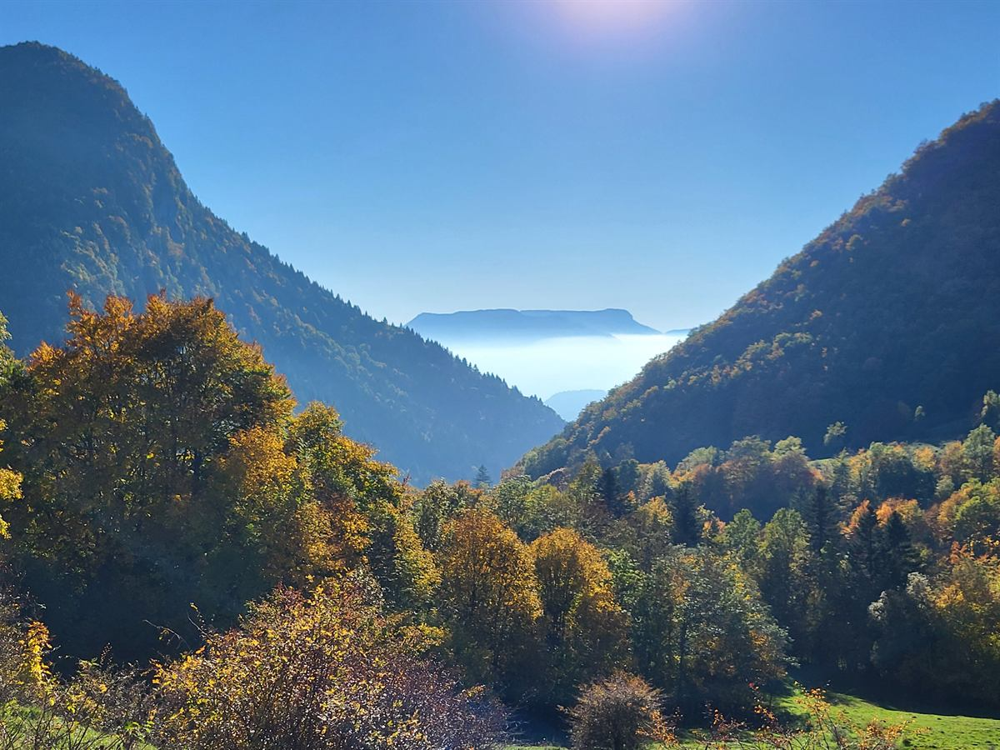

Les stages collectifs · Stage de 3 jours
Retrouver sa boussole intérieure
Faire dialoguer la tête, le cœur, le corps et l'esprit.
Trois jours pour faire dialoguer la tête, le cœur, le corps et l'esprit, et retrouver votre liberté de choisir.
- Durée
- 3 jours
- Lieu
- Massif des Bauges, Savoie
- Groupe
- 4 à 6 personnes
- Format
- Marche le matin, ateliers l'après-midi
- Dates
- À venir
- Tarif
- À préciser
Et si vous preniez le temps de vous écouter vraiment ?
Dans un quotidien rythmé par les sollicitations, les responsabilités et les changements, il est parfois difficile de rester à l'écoute de soi. La tête prend le dessus, les émotions se bousculent, le corps manifeste sa fatigue et les aspirations profondes passent au second plan.
Vous avancez, vous assumez vos responsabilités, vous prenez des décisions... mais êtes-vous toujours en accord avec ce qui compte vraiment pour vous ?
Au cœur des montagnes des Bauges, je vous invite à ralentir, à prendre de la hauteur et à explorer les différentes dimensions de votre être pour retrouver votre équilibre et choisir votre direction.
Quatre dimensions pour mieux se connaître
Nos pensées, nos émotions, notre corps et notre dimension profonde interagissent en permanence. Pourtant, nous n'accordons pas toujours la même attention à chacune d'elles.
La têteClarifier
Explorer vos pensées, vos croyances et votre manière d'interpréter les situations. Repérer ce qui vous aide à avancer et ce qui vous enferme parfois dans des schémas répétitifs.
Le cœurRessentir
Accueillir vos émotions, écouter vos besoins et reconnaître ce qui vous touche, vous anime ou vous freine. Redonner sa place à votre intelligence émotionnelle.
Le corpsÉcouter
Retrouver le contact avec vos sensations, votre énergie et vos rythmes naturels. Reconnaître les signaux de votre corps et mieux respecter ses besoins.
L'espritSe relier à l'essentiel
Explorer ce qui vous relie à vos aspirations essentielles et à ce qui donne du sens à votre existence, et, selon vos convictions, à quelque chose de plus grand que vous.
L'équilibre n'est pas un état parfait à atteindre une fois pour toutes. C'est un mouvement vivant : apprendre à écouter chacune de nos dimensions et à les faire dialoguer pour faire des choix plus conscients et plus respectueux de soi.
Trois jours pour retrouver votre direction
- JOUR 1 · SE POSERRetrouver ses repèresSortir du quotidien, retrouver un rythme plus naturel et faire le point sur votre équilibre actuel : quelle place occupent vos pensées, vos émotions, votre corps et vos aspirations ?Intention : prendre conscience de votre fonctionnement et retrouver un espace d'écoute intérieure.
- JOUR 2 · EXPLORERFaire dialoguer ses dimensionsDécouvrir les interactions et les contradictions entre vos dimensions. À travers la marche, des exercices créatifs et des expériences guidées, apprendre à les écouter et à les faire dialoguer.Intention : découvrir de nouvelles ressources et ouvrir des perspectives.
- JOUR 3 · CHOISIRRetrouver sa directionIdentifier vos valeurs et vos priorités, expérimenter une manière de décider qui tient compte de toutes vos dimensions et définir quelques actions simples et réalistes.Intention : retrouver votre liberté de choisir et vous remettre en mouvement.
La montagne, un espace pour prendre de la hauteur

Chaque matin, nous partons marcher dans les paysages du massif des Bauges. La marche remet le corps en mouvement, les grands espaces élargissent le regard, le silence et la contemplation invitent à retrouver un autre rythme.
La montagne nous rappelle aussi que chaque chemin comporte ses passages faciles, ses obstacles, ses détours et ses découvertes. Les après-midi, les ateliers en salle prolongent ce qui a été vécu dehors.
Des expériences pour se découvrir autrement
Quelques expériences que vous pourrez vivre pendant ces trois jours.
- Ma boussole intérieureFaire le point sur mes quatre dimensions
Une représentation visuelle de votre tête, de votre cœur, de votre corps et de votre esprit pour repérer vos points d'appui et ce qui mérite davantage d'attention.
- Les quatre voix en moiÉcouter ce que chaque dimension a à me dire
À partir d'une situation réelle, donner tour à tour la parole à chacune de vos dimensions et découvrir leurs messages.
- La marche des quatre regardsExplorer autrement une situation
En marchant, porter successivement votre attention sur vos pensées, vos émotions, vos sensations et ce qui vous relie à l'essentiel.
- Mon paysage intérieurReprésenter ce qui compte vraiment pour moi
Par le dessin, le collage ou la création symbolique, donner forme à vos valeurs, vos ressources, vos obstacles et vos envies.
- Ma boussole pour demainChoisir ma direction
Faire dialoguer vos quatre dimensions autour d'un projet ou d'une décision, puis définir vos premiers pas concrets.
Ces expériences sont proposées dans le respect du rythme et de la liberté de chacun. Leur déroulement peut être adapté aux besoins du groupe.
Ce que ces trois jours peuvent vous apporter
- Une meilleure compréhension de votre fonctionnement et de vos besoins.
- Une écoute plus attentive de vos pensées, de vos émotions, de votre corps et de vos aspirations.
- Une conscience plus claire de ce qui vous nourrit, vous freine ou vous déséquilibre.
- Une vision plus précise de vos valeurs et de ce qui est essentiel pour vous.
- Davantage de confiance pour prendre des décisions en accord avec vous-même.
- Des outils concrets pour cultiver votre équilibre au quotidien et des premiers pas pour retrouver votre élan.
L'objectif n'est pas de trouver un équilibre parfait, mais de développer une relation plus consciente, plus vivante et plus harmonieuse avec vous-même.
Ce stage est fait pour vous si...
Aucune expérience préalable en développement personnel n'est nécessaire. L'essentiel est d'avoir envie de vous découvrir, d'expérimenter et de participer activement à votre cheminement.
- Vous traversez une période de transition ou de questionnement.
- Vous avez le sentiment d'avoir perdu certains de vos repères.
- Vous ressentez des contradictions entre ce que vous pensez, ressentez et souhaitez.
- Vous aimeriez davantage de cohérence entre vos choix et vos aspirations.
- Vous souhaitez mieux vous connaître et explorer votre dimension intérieure, dans le respect de vos convictions.
- Vous avez envie de retrouver une direction et de vous remettre en mouvement.
Infos pratiques
- Durée
- 3 jours
- Lieu
- Massif des Bauges, Savoie
- Groupe
- 4 à 6 participants
- Dates
- À venir
- Tarif
- À préciser
- Hébergement et repas
- Modalités à préciser
Les marches sont adaptées aux conditions météorologiques et aux capacités du groupe. Le niveau de marche requis est précisé avant l'inscription.
Le rythme des journées
- Le matin : marche en montagne, expériences, questionnements et temps de contemplation.
- À midi : une pause déjeuner pour se retrouver et partager.
- L'après-midi : ateliers créatifs, exercices de connaissance de soi, expérimentations et échanges.
- En fin de stage : un bilan personnel et des pistes concrètes pour prolonger les découvertes.
Et si vous retrouviez votre propre direction ?
Accordez-vous trois jours pour prendre de la hauteur, écouter toutes les dimensions de votre être et retrouver ce qui vous guide profondément. Votre boussole intérieure est unique : prenez le temps de la redécouvrir.
L'Élan des Cimes · Retrouver son élan, choisir son chemin.